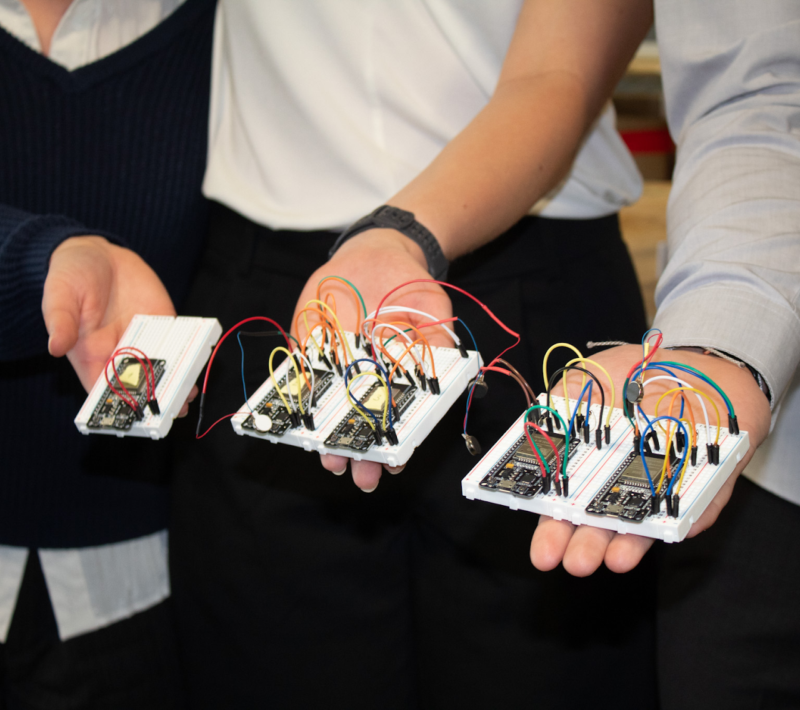
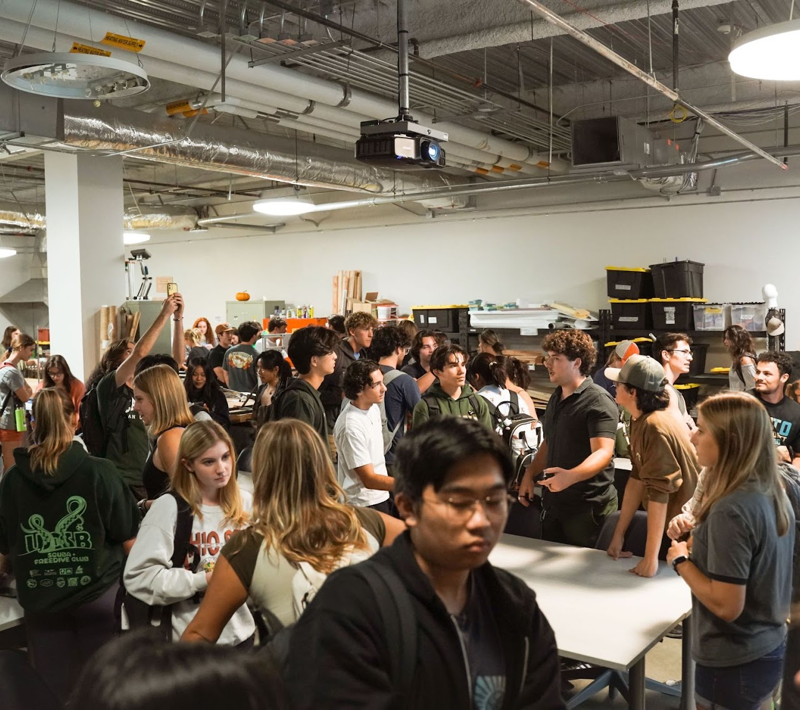
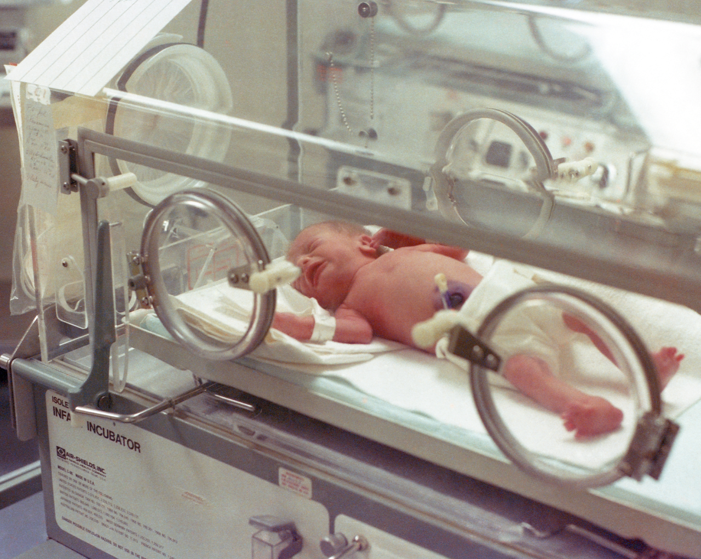

Formal Design Projects (FDP)
These year-long interdisciplinary projects require an application.

Quarterly Design Projects (QDP)
This quarter-long project is open to anyone!

Lab Design Projects (LDP)
These year-long interdisciplinary projects require an application and aim to improve the lab space.

Research Projects
These year-long interdisciplinary projects require an application.
Spring 2026 QDP: Rain Protection Attachment for John
Form teams and help build a wheelchair attachment for DRC specialist John Lee.
Spring QDP starts at the first meeting of Spring quarter! We'd love for you to join.
Click here for the information PDF
Current Full-year projects
Weightlifting Prosthetic
Dr. Dylan Retsek is one of Cal Poly’s best math professors as well as a competitor on USA Climbing’s paraclimbing team. After designing a rock climbing orthotic for Dylan, EMPOWER students are developing a device that will allow him to perform various weight training movements in addition to allowing him to pursue outdoor climbing projects.
Marching Band Haptic Feedback System
EMPOWER students in this project are working with a marching band of visually impaired musicians. They are developing a cost effective, wearable haptic system to alert members of their proximity to others in formation and help organize a marching band of 25 musicians to allow them to independently play and march.
Prosthetic for Pismo
Pismo, a dog living on the central coast, was hit by a car a few years ago and received an amputation of her front right leg. This project is focusing on creating an assistive device that normalizes Pismo’s movements, ensures stability and range of motion, and is safe, ergonomic, and easy for her owner to use.
Foldable Bike for Sally
This is another project working with Sally, who has bilateral epicondylitis, which heavily weakens her grip strength, impacts fine motor skills, and causes radiating pain. The goal of this project is to develop a foldable tricycle so Sally doesn’t need to rely on her balance as much.
Hands-Free Mouse for Sally
This project is working with Sally, who has bilateral epicondylitis, which heavily weakens her grip strength, impacts fine motor skills, and causes radiating pain. The EMPOWER team is currently developing a foot-controlled mouse to improve Sally’s experience using her computer.
.
Electric Stimulation Therapies
This project aims to develop two electric stimulation devices simultaneously; one for the hands and one for the feet. Much of the project involves redesigning the circuit from current physical therapy devices called TENS or EMS. The other vital part consists of adapting this circuit to interact with the human peripheral nervous system. In doing this, the devices hope to provide effective pain reduction, joint flexibility, and a noticeable blood flow increase to specific areas.
.
Adaptive Golf Glove
EMPOWER students are designing a device to attach onto golf gloves to improve the grip strength and stability of the club. The glove can benefit those in the adaptive golfer community, as powerful grip strength accounts for better control, precision, and swinging power.
EW Syringe Inflation Control for Edwards Lifesciences
Edwards Lifesciences is challenging EMPOWER students to develop a device that monitors inflation speed control with the inflation device to assist in physician training for TAVR procedures.
3D Printing Filament Recycling LDP
The goal of this project is to develop a process that reuses 3D printed waste by converting it back into filament.
Assistive Arthritis Device for Christina
Christina Garcia is the mother of a BMED student at Cal Poly who has arthritis in her right hand and elbow. As a result, she lacks the grip strength or range of motion to do everyday tasks like washing her face, cooking, and reaching for items. She is challenging EMPOWER students to create an assistive device to help her with specific everyday tasks, mainly reaching and grabbing objects.
.
FetchBand for Friday Club
This project partners with Friday Club, a Cal Poly program that provides physical activities for participants living with various physical and mental disabilities. Two groups of EMPOWER students won the Fall 2025 QDP competition, which was to design a device that encourages a repeated throwing motion with an auto-return function.
BounceBack for Friday Club
This project partners with Friday Club, a Cal Poly program that provides physical activities for participants living with various physical and mental disabilities. Two groups of EMPOWER students won the Fall 2025 QDP competition, which was to design a device that encourages a repeated throwing motion with an auto-return function.
NICU CPAP Mask Redesign | 2024-2025
EMPOWER students worked with Dr. Van Scoy, a Neonatologist at Sierra Vista Regional Medical Center, to redesign and improve the Bubble CPAP masks used on babies requiring non-invasive respiratory support. This project continued as a Cal Poly Entrepreneurial senior project.
Stent Fatigue Tester | 2023-2025
In this project, EMPOWER students developed a stent fatigue-testing system to assess the durability of stents for 380 million cycles. The goal was to ensure the efficiency and safety of stents before clinical use by developing a reliable, efficient, and cost-effective testing system.
Variable Coiling Machine | 2023-2024
EMPOWER students were challenged by Encompass Technologies to design and manufacture a cost effective table-top wire coiling device which can reliably produce 0.003 inch diameter coils over a 24 inch length to aid the R&D team in rapid prototyping of transcatheter cardio and neurovascular systems.
Hand for Maggie | 2022-2024
This project partnered with Maggie, who was a biomedical engineering student born with amniotic band syndrome, which caused several of her fingers to be underdeveloped. Maggie and her EMPOWER teammates created prosthetic fingers that enabled her to lift weights in the gym.
Climbing Sleeve for Dr. Retsek | 2023-2024
This project worked with Dr. Retsek, a Cal Poly math professor and competitive paraclimber, to develop a multi-use sleeve that offers increased comfort, grip, and rotational stability during climbing. This project won 1st place in the sports division of international Tikkun Olam Makers 2024 design competition.
Surf Board Prosthetic Attachment for Dana | 2023-2024
This project worked with Dana who is the founder of AmpSurf and a lower limb amputee. AmpSurf is a non-profit organization established to Promote, Inspire, Educate, and Rehabilitate all people with disabilities, Veterans, and First Responders through Adaptive Surf Therapy and to support those who wish to compete in Para Surfing. This project created attachments that added stability to the interface between a prosthetic leg and a surfboard when catching a wave.
Skateboard for Carlo | 2022-2023
This project worked with Carlo, who sustained a severe mountain biking accident just over a year ago, paralyzing him from the chest down. During this project, EMPOWER students developed a wheelchair-compatible electric skateboard (inspired heavily by Evan Lalanne) to provide Carlo an easier method of transportation to/from school and a fun new action sport.
Vision Measurement System for Edwards Lifesciences | 2022-2023
EMPOWER students were challenged by Edwards Lifesciences to create a camera-assisted variable inspection system for coating defects to mitigate operator subjectivity, monitor product stability, and produce better component yields.
Stent Weld Inspection for EnCompass Technologies | 2022-2023
This projected partnered with EnCompass Technologies to develop an inspection system that allows an operator to reliably take pictures of stents using a digital microscopic camera so that the inspected welds can be documented, verifying that all ferrules are present and welds are not excessively discolored, malformed, or fractured.